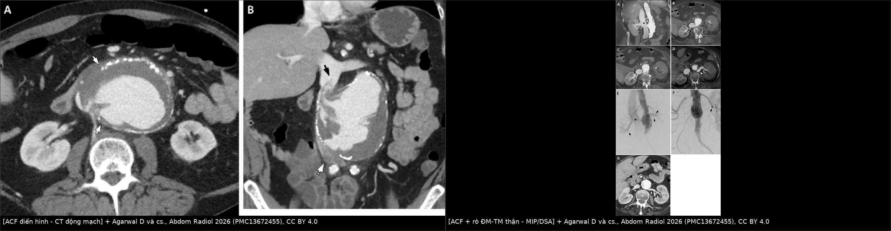
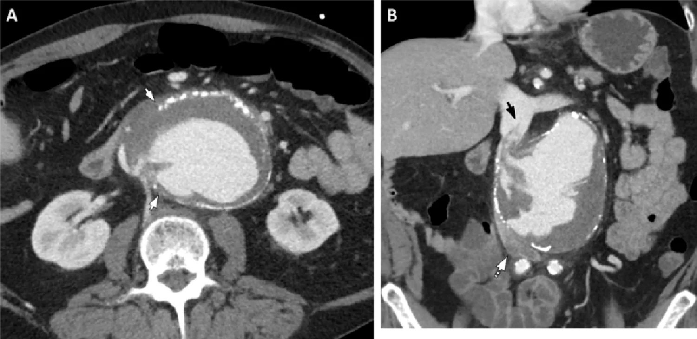
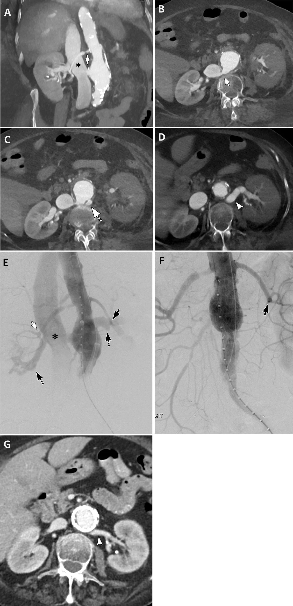
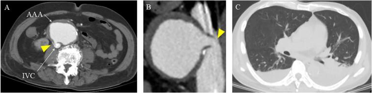

939 — Rò động mạch chủ–tĩnh mạch chủ (aortocaval fistula, ACF): ngấm TM chủ ở thì động mạch
Tags: pattern:ro-dong-tinh-mach pattern:ngam-tinh-mach-som pattern:suy-tim-cung-luong-cao pattern:gia-ngam-thuoc-than pattern:gian-tinh-mach-chu vung:dong-mach-chu-bung vung:tinh-mach-chu-duoi vung:than protocol:CTA-bung-3-thi protocol:DSA protocol:EVAR
Mức chắc chắn (certainty): tổng hợp y văn (literature synthesis) — 1 bài tổng quan hình ảnh rò ĐMC (Abdom Radiol 2026, PMC13672455), 2 ca nguyên văn có ảnh CTA (PMC12395442; PMC11999540), 1 ca nguyên văn dùng stent-graft trong IVC (PMC10907850) và 3 ca bổ trợ số liệu (PMC13017064; PMC11821926; PMC10319617). Không có thử nghiệm ngẫu nhiên; mọi ngưỡng xử trí là tổng hợp thực hành, chỗ suy luận được ghi rõ.
Câu chốt: ACF là đường thông giữa ĐMC (thường là túi phình dưới thận) và tĩnh mạch chủ dưới. Dấu chốt trên CTA là TM chủ ngấm cản quang ĐỒNG THỜI với ĐMC ở thì động mạch — bình thường IVC chỉ ngấm ở thì tĩnh mạch 70–90 giây. Bệnh cảnh gợi ý không phải "sốc mất máu" mà là phình ĐMC + suy tim cung lượng cao/phù chi dưới/tiểu máu — vì máu vẫn nằm trong lòng mạch, sốc hiếm gặp (PMC13672455). Bỏ sót = bơm bù dịch làm suy tim nặng thêm, hoặc mổ mà không kiểm soát được lỗ rò.
1. Tổng quan bệnh học – cơ chế hình ảnh (TẠI SAO)
1.1 Dịch tễ và bối cảnh
- Tần suất: ACF chiếm < 1% mọi phình ĐMC bụng (AAA) và tăng lên 2–6,7% ở phình ĐMC vỡ (PMC10907850); bài tổng quan hình ảnh ghi 2–7%, có loạt tới 10% (PMC13672455); loạt khác ghi 0,2–1,3% mọi phình và ~3% phình vỡ (PMC11821926); tổng hợp ca bệnh ghi < 1% đến 10% (PMC10319617).
- Nguyên nhân: 80% nguyên phát (phình xơ vữa ăn mòn IVC) và 20% thứ phát; trong số nguyên phát, 5–10% do phình nhiễm khuẩn (mycotic), Ehlers–Danlos hoặc Marfan (PMC11999540). Nguyên nhân khác: chấn thương xuyên thấu, gãy–trật cột sống ngực–thắt lưng, mổ cột sống, thủ thuật sau phúc mạc (cắt thận), filter IVC, nhiễm khuẩn huyết (PMC13672455; PMC10319617).
- Vị trí: ĐMC bụng dưới thận, ngay trên chỗ hợp lưu hai tĩnh mạch chậu là vị trí thường gặp nhất (PMC11999540; PMC13672455).
- Tử vong: 22–51% (PMC11999540); đánh giá hồi cứu quanh mổ có thể tới 60% do mất máu, thuyên tắc phổi và suy tim (PMC11821926).
1.2 Sinh lý bệnh — vì sao bệnh cảnh "kỳ lạ"
- Shunt trái–phải lớn: một phần cung lượng tim đổ thẳng vào hệ tĩnh mạch → tăng thể tích tuần hoàn tĩnh mạch, suy tim cung lượng cao, phù chi dưới, giãn tĩnh mạch, huyết khối tĩnh mạch sâu, thuyên tắc phổi, thiếu máu chi (PMC13672455).
- Sốc hiếm: máu vẫn ở trong lòng mạch, chỉ đổi "khoang" → huyết áp có thể còn giữ được trong khi bệnh nhân đã suy tim nặng. Đây là lý do ACF hay bị chẩn đoán muộn hoặc bị quy cho "suy tim do bệnh tim" (PMC13672455; PMC12395442).
- Tăng áp lực tĩnh mạch thận: dòng tĩnh mạch thận bị dội ngược → tiểu máu, tăng creatinin, giảm ngấm nhu mô thận (PMC11821926: creatinin 5,57 mg/dL; PMC13017064: thận không ngấm, tĩnh mạch thận ngấm một phần).
- Mức độ triệu chứng phụ thuộc KÍCH THƯỚC lỗ rò và thời gian tồn tại: lỗ nhỏ → phát hiện tình cờ; lỗ lớn → suy tim cấp, thiếu máu chi, vô niệu (PMC13672455).
1.3 TẠI SAO nhìn thấy trên CT (vật lý + giải phẫu)
| Đại lượng | Con số | Ý nghĩa đọc phim |
|---|---|---|
| Cản quang trong ĐMC | 300–400 HU | Mốc "máu động mạch" |
| Cản quang pha loãng trong IVC | 80–200 HU | Vẫn sáng hơn cơ (40–60 HU) — đủ để gọi là "ngấm sớm" |
| Mỡ quanh ĐMC–IVC | −100 đến −50 HU | Mất mặt phẳng mỡ = dấu sớm, có trước khi thấy dòng rò |
| Vôi hóa thành ĐMC | > 400 HU | Gián đoạn vôi hóa ở vị trí rò là dấu định vị |
| Thì động mạch | 25–35 giây | Thời điểm DUY NHẤT chứng minh rò |
| Thì tĩnh mạch bình thường của IVC | 70–90 giây | IVC ngấm ở 25–35 giây = bất thường |
- Ngấm sớm IVC: cản quang đi tắt qua lỗ rò, nên IVC và tĩnh mạch thận ngấm cùng lúc với ĐMC — "đồng thời ngấm" là dấu đặc hiệu (pathognomonic) theo bài tổng quan (PMC13672455).
- Vì sao IVC dưới lỗ rò lại KHÔNG ngấm tốt: dòng máu từ lỗ rò tạo dòng xoáy/pha loãng và có thể chảy ngược về tĩnh mạch chậu; trên ảnh coronal, đoạn IVC dưới lỗ rò nhạt hơn hẳn — đừng đọc là "IVC không có cản quang nên không rò" (PMC13672455, Fig. 11).
- Vì sao thận giảm ngấm: tăng áp lực tĩnh mạch thận làm giảm chênh áp lọc → nhu mô ngấm chậm/kém, hồi phục sau khi bịt rò (PMC13672455, Fig. 10G).
- Mảnh vôi/mảng xơ "trôi" vào IVC: thành ĐMC mất liên tục, mảng xơ vữa bị dòng rò cuốn vào lòng IVC → hình ảnh khuyết thuốc di động trong IVC, phân biệt với huyết khối tĩnh mạch (PMC13672455, Fig. 11B).
2. Mẫu hình + chẩn đoán phân biệt theo cơ chế (Gamut)
- Nhóm 1 — Phình (chiếm đa số): AAA xơ vữa ăn mòn IVC; thể "ACF + phình vỡ" có tử vong cao nhất.
- Nhóm 2 — Mổ/thủ thuật: sau EVAR (endoleak type II muộn ăn mòn IVC — ca PMC10907850), sau mổ hở ĐMC, sau cắt thận, sau filter IVC.
- Nhóm 3 — Chấn thương: xuyên thấu; gãy–trật cột sống ngực–thắt lưng (ĐMC và IVC bị kéo căng trên cùng một trục).
- Nhóm 4 — Nhiễm: phình nhiễm khuẩn (Salmonella, Candida), viêm ĐMC.
- Nhóm 5 — Bẩm sinh/di truyền: ACF bẩm sinh ở trẻ (kèm còn ống động mạch), Ehlers–Danlos, Marfan.
- Gợi nhớ "Phình – Mổ – Chấn – Nhiễm – Bẩm": gặp bệnh cảnh phình ĐMC + suy tim/phù chi thì nghĩ Phình trước, nhưng luôn hỏi tiền sử can thiệp vì nhóm Mổ đang tăng lên theo số ca EVAR.
3. Bảng so sánh phân biệt (ma trận đối chiếu)
| Thực thể (entity) | Hình ảnh điển hình | Chốt vào (rule-in) | Chốt loại (rule-out) | Gợi ý xác nhận |
|---|---|---|---|---|
| ACF do phình ĐMC | Túi phình dưới thận lớn, gián đoạn vôi hóa thành sau, mất mặt phẳng mỡ với IVC, IVC ngấm thì động mạch | IVC ngấm ĐỒNG THỜI với ĐMC ở 25–35 giây + mất liên tục thành ĐMC–IVC | IVC chỉ ngấm ở thì tĩnh mạch, mặt phẳng mỡ còn nguyên → không rò | CTA 3 thì + MPR coronal; DSA khi can thiệp |
| ACF sau EVAR (endoleak type II muộn) | Stent-graft cũ, túi phình còn lớn, khí/dịch quanh graft, IVC ngấm sớm | Endoleak + IVC ngấm sớm; túi không teo sau EVAR | Túi teo dần + không ngấm IVC → theo dõi | CTA 3 thì; so phim cũ; DSA chọn lọc |
| Rò ĐMC–TM thận (aortorenal vein fistula) | TM thận trái giãn, ngoằn ngoèo, thận cùng bên ngấm kém, IVC ngấm sớm | TM thận giãn + ngấm sớm + thận giảm ngấm | TM thận bình thường, thận ngấm đối xứng → không có nhánh rò | MIP coronal; DSA; hình ảnh hồi phục sau stent là chốt |
| Rò ĐM chậu–TM chậu | Ổ phình chậu + TM chậu ngấm sớm, IVC ngấm muộn hơn | TM chậu ngấm sớm tại chỗ rò | Ngấm bắt đầu từ IVC → không phải rò chậu | CTA bụng–chậu đến ngang bẹn |
| Rò ĐMC–ruột (bài 938) | Khí trong túi/quanh graft, ruột dính thành ĐMC, máu báo | Khí ngoài lòng + ruột dính + XHTH | Không khí, không XHTH → không phải AEF | Nội soi + CTA (bài 938) |
| Trào ngược cản quang từ nhĩ phải (giả ACF) | Cản quang trong IVC đoạn cao (gan), độ ngấm thấp hơn ĐMC rõ rệt | Ngấm nhạt + chỉ ở IVC cao + không có lỗ rò | Đồng thời, đồng độ ngấm, tại ngang túi phình → là rò thật | So độ HU IVC với ĐMC; xem MPR |
| Huyết khối TM chủ | Khuyết thuốc trong lòng IVC, IVC giãn | Khuyết thuốc không ngấm + IVC giãn | Có dòng cản quang vào IVC ở thì động mạch → là rò, không chỉ huyết khối | CTA 3 thì; đối chiếu thì không cản quang |

Trái: ACF điển hình — thành ĐMC mất liên tục, mảnh xơ trôi vào IVC, IVC dưới lỗ rò nhạt. Phải: ACF kèm rò ĐMC–TM thận trái — TM thận giãn, thận trái ngấm kém, DSA trước/sau stent. Ảnh ghép letterbox từ 2 hình CC BY 4.0 (PMC13672455).Ba dấu hiệu định vị lỗ rò (đọc theo thứ tự)
- Gián đoạn vôi hóa thành sau ĐMC (thường 7–10 giờ trên mặt cắt ngang).
- Mất mặt phẳng mỡ giữa ĐMC và IVC, hai thành dính nhau.
- Mảnh vôi/mảng xơ trong lòng IVC hoặc dòng cản quang phụt vào IVC — dấu chốt.
4. Protocol chụp + phân độ & xử trí
- CTA bụng–chậu 3 thì (không cản quang → động mạch → tĩnh mạch), lát ≤ 1 mm, MPR coronal/sagittal + MIP; thì động mạch dùng bolus tracking hoặc 25–35 giây (PMC13672455).
- Không dùng cản quang đường uống để "tìm rò" (khác bài 938 — ở AEF cản quang uống có vai trò minh họa, ở ACF thì không).
- Đo và ghi: đường kính túi phình (mm), chiều dài cổ túi, khoảng cách lỗ rò tới động mạch thận, đường kính IVC, có/không huyết khối IVC, tình trạng ngấm hai thận.
- Gợi ý kỹ thuật: thì động mạch chụp khi hít vào có thể làm IVC giãn hơn (thay đổi đường kính theo nhịp thở) — bài tổng quan nêu như giả thuyết kỹ thuật, chưa có bằng chứng lâm sàng (PMC13672455).
- Xử trí: EVAR cấp cứu là lựa chọn cho bệnh nhân nguy cơ cao (ca 76 tuổi suy tim mạn + suy thận: EVAR, hậu phẫu thuận lợi, túi teo dần dù còn shunt nhỏ — PMC12395442); mổ hở (cắt túi + graft + đóng lỗ rò) cho người trẻ/ổn định; khi lỗ rò lớn có thể đặt covered stent-graft trong IVC (ca 78 tuổi sau EVAR 6 năm, theo dõi 24 tháng không tắc, không endoleak — PMC10907850).
- Theo dõi sau can thiệp: CTA 1–3–6–12 tháng, tìm endoleak tồn tại, kích thước túi, độ ngấm thận, dấu suy tim.
flowchart TD
A[Phình ĐMC + phù chi dưới / suy tim / tiểu máu] --> B[CTA bụng–chậu 3 thì, lát ≤ 1 mm]
B --> C{IVC ngấm đồng thời với ĐMC ở thì động mạch?}
C -->|Có| D[ACF — đo túi, cổ túi, vị trí lỗ rò so với ĐM thận]
C -->|Không| E{TM thận / TM chậu ngấm sớm?}
E -->|Có| D
E -->|Không| F[Tìm nguyên nhân khác: suy tim, huyết khối TM, AEF bài 938]
D --> G{Bệnh nhân nguy cơ cao / phình vỡ?}
G -->|Có| H[EVAR cấp cứu ± stent-graft trong IVC]
G -->|Không| I[Mổ hở: cắt túi + graft + đóng lỗ rò]
H --> J[CTA 1–3–6–12 tháng: endoleak, kích thước túi, ngấm thận]
I --> J
5. Biến thể bình thường và cạm bẫy
- Trào ngược cản quang từ nhĩ phải: gặp ở bệnh nhân suy tim, tiêm tốc độ cao; cản quang trong IVC nhạt hơn ĐMC và không có lỗ rò — so độ HU để loại (PMC13672455).
- IVC bị túi phình chèn ép: lòng IVC dẹt, khó đánh giá "ngấm sớm" → dùng tĩnh mạch thận/phụ hệ ngấm sớm và mất mặt phẳng mỡ làm dấu thay thế (PMC13672455; ca PMC12395442: túi 56,6 × 73,7 mm chèn ép IVC).
- Thận giảm ngấm ≠ nhồi máu thận: tăng áp lực tĩnh mạch thận; sau khi bịt rò thận ngấm lại bình thường (PMC13672455, Fig. 10F–G) — đừng can thiệp thận.
- "Không sốc" không loại trừ ACF: máu vẫn trong lòng mạch; bù dịch mạnh có thể làm suy tim cung lượng cao nặng thêm.
- Chỉ chụp thì tĩnh mạch: IVC ngấm đều → mất dấu chốt; luôn phải có thì động mạch.
- Mảnh vôi trong IVC bị đọc thành huyết khối tĩnh mạch → kiểm tra thì không cản quang và bờ tổn thương.
- Bỏ sót vì "túi phình đã vôi hóa kín": dấu rò nằm ở một điểm gián đoạn vôi hóa nhỏ, cần cửa sổ mạch và MPR mỏng.
6. Tự lượng giá — Blind Quiz
Ca 1 — Nam 70 tuổi, đau bụng đột ngột, tụt huyết áp, khối đập ở bụng.

- Câu hỏi: Thành ĐMC mất liên tục ở đâu? Có gì trong lòng IVC? Vì sao đoạn IVC dưới lỗ rò lại nhạt?
Bấm để hiện đáp án (findings + chẩn đoán)
- Findings: túi phình ĐMC lớn, vôi hóa ngoại vi; mất liên tục vôi hóa và mất bờ tròn thành ĐMC ở 7–10 giờ, mất mặt phẳng với IVC; coronal: lỗ rò dưới thận, mảnh xơ vữa trôi vào lòng IVC; IVC dưới lỗ rò không ngấm tốt.
- Chẩn đoán: ACF do phình ĐMC vỡ — cản quang vào IVC ở thì động mạch là dấu chốt.
- Vì sao IVC dưới nhạt: dòng rò tạo xoáy/pha loãng và có thể chảy ngược về tĩnh mạch chậu — không phải dấu loại trừ.
- Nguồn ảnh: Agarwal D và cs., Abdom Radiol 2026, Fig. 11 (PMC13672455), CC BY 4.0.
Ca 2 — Nữ 66 tuổi, đau hông lưng trái, creatinin 3,5 mg/dL, 4 ngày sau ngón chân tím và mạch yếu.

- Câu hỏi: Vì sao thận trái ngấm kém? Có mấy đường rò? Sau stent thay đổi gì?
Bấm để hiện đáp án (findings + chẩn đoán)
- Findings: (A, B) ACF với IVC ngấm sớm; (C, D) thêm rò ĐMC–tĩnh mạch thận trái, TM thận trái giãn ngoằn ngoèo; thận trái ngấm kém; (E) DSA: nhánh ĐM thận trái bị "tỉa" (pruning), TM thận và IVC ngấm sớm; (F, G) sau đặt stent: ĐM thận trái ngấm bình thường, hai thận ngấm đối xứng.
- Chẩn đoán: ACF + rò ĐMC–TM thận trái; giảm ngấm thận do tăng áp lực tĩnh mạch thận, hồi phục sau khi bịt rò.
- Cạm bẫy: đừng gọi "nhồi máu thận" — tổn thương hồi phục hoàn toàn sau can thiệp.
- Nguồn ảnh: Agarwal D và cs., Abdom Radiol 2026, Fig. 10 (PMC13672455), CC BY 4.0.
Ca 3 — Nam 76 tuổi, đang điều trị suy tim mạn, phát hiện tình cờ khi siêu âm bụng.

- Câu hỏi: IVC ngấm ở thì nào? Vì sao có tràn dịch màng phổi hai bên? Hướng xử trí?
Bấm để hiện đáp án (findings + chẩn đoán)
- Findings: (A, B) IVC ngấm cản quang ở thì động mạch (mũi tên vàng) — dấu chốt ACF; túi phình dạng túi 56,6 × 73,7 mm chèn ép IVC; (C) tràn dịch màng phổi hai bên do suy tim cung lượng cao.
- Chẩn đoán: ACF trên phình ĐMC ở bệnh nhân suy tim mạn + suy thận; EVAR cấp cứu, hậu phẫu thuận lợi, túi teo dần dù còn shunt nhỏ.
- Vì sao không sốc: máu vẫn trong lòng mạch → bệnh cảnh "suy tim + suy thận" chứ không phải "sốc mất máu".
- Nguồn ảnh: Tsumura K, Uchiyama M, Int J Surg Case Rep 2025, Fig. 1 (PMC12395442), CC BY 4.0.
Bài liên quan chéo
- 938 – Rò động mạch chủ–ruột (AEF) (cùng bối cảnh "phình ĐMC + biến chứng", khác dấu chốt: khí/ruột thay vì TM chủ)
- 170 – Phình động mạch chủ bụng
- 901 – Tổng quan can thiệp IR
- 920 – Nút mạch & vật liệu can thiệp
Ảnh
939_ro-dong-mach-chu-tinh-mach-chu_CT_PMC13672455-F11.jpg— ACF điển hình (axial + coronal).939_ro-dong-mach-chu-tinh-mach-chu_CT_PMC13672455-F10.jpg— ACF + rò ĐM–TM thận, DSA trước/sau stent.939_ro-dong-mach-chu-tinh-mach-chu_CT_PMC12395442-F1.jpg— IVC ngấm thì động mạch + tràn dịch màng phổi.composite_acf-dien-hinh-vs-giam-ngam-than.jpg— ảnh ghép đối chiếu (CC BY 4.0).- Nguồn + giấy phép từng ảnh:
images/CREDITS.md.
Không dùng để chẩn đoán độc lập khi chưa có người hướng dẫn.